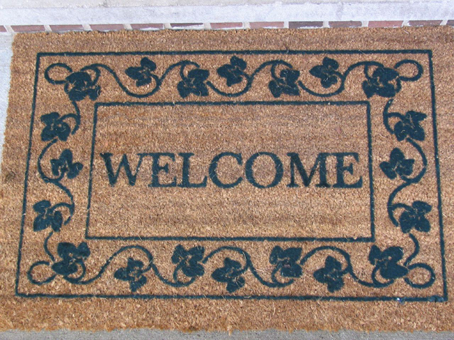

Accept Deal
VII.
"Fine, I accept," I tell Siren.
"Good," she says. "Where do your captor's keep their spare key?"
"They keep it under the welcome mat on the porch before the front door. The address is 244 East North Maple Street and by where Irving Rark Road and North Clark Street intersect."
"Wait here under the porch. No one will see you. There are snacks and water that you can eat and drink as you wait. Once I return with the key, I'll free you from your collar and bell. You'll then be safe to roam and hunt when night comes."
I move below the porch and hide from view. While I never hear or see Siren slip out, I just have a sense that she left. I do see a bowl with clean water and cat and dog food--a variation of sorts--acquired from various bags across the neighborhood. I wait an hour or two before I close my eyes. I dream of being back to my home planet and in my own twenty foot body and razar sharp teeth...When I open up my eyes, I sense that it's evening. I feel something click on my collar. Startled, I turn around, seeing Siren sitting there with a silver key in her hand and with my collar connected to a leash.
"What is this?!" I hiss.
"I found a better offer. In exchange for their friend back, Speedy and Bernard gave me the locations of other keys in the neighborhood."
"Those traitors!"
"I told them that you had been captured. You'd be surprised about the power of friendship. That apparently escaped your mind when you abandoned them and sold them out for your freedom."
"You wretch! When I--"
I pause, feeling a pull on my leash.
"Hey buddy, how you doing?" Rahul says.
"Don't pull him so hard," Melody adds. "If you actually paid attention to things rather than to your lame dubstep and net movies, we wouldn't be getting a call from a stranger telling us the whereabouts of our cat in the middle of the night that she found trapped below the porch!"
"Oh bite me."
I hiss and attempt to claw away from Rahul, but his strength and Melody's quickness overwhelm me, and they quickly put me in a travel cage. I hiss and threaten Siren--wherever she went--as they put me in their backseat of their car.
